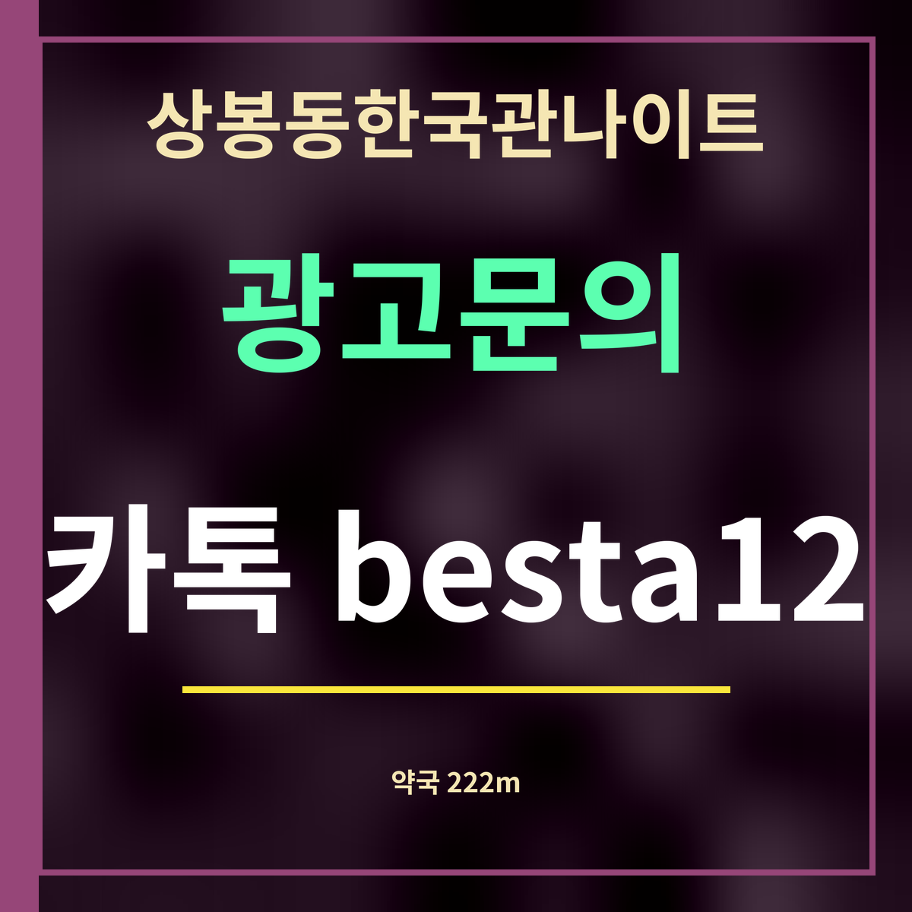

상봉동한국관나이트 근처 약국 정리, 가장 가까운 222m
가게와 관계없이 공개 지도로 모은 목록입니다(카카오맵, 9월 27일). 거리는 걷는 길이 아니라 지도 위 직선 길이이고, 약국 영업시간은 확인되지 않아 싣지 않았습니다.

핵심 3줄: 가장 가까운 약국은 바르다 허약국(망우로 305), 직선 222m. 400m 안에 약국이 다섯 곳 있습니다. 늦은 시각에 문을 여는지는 가기 전에 확인해야 합니다.
거리순 약국 7곳
| 바르다 허약국 | 중랑구 망우로 305 | 222m |
| 밝은약국 | 중랑구 면목로 490 | 273m |
| 송정약국 | 중랑구 면목로 495 | 303m |
| 상봉태평양약국 | 중랑구 면목로 481 | 338m |
| 다솜약국 | 중랑구 면목로 475 | 376m |
| 사랑약국 | 중랑구 망우로 271 | 531m |
| 동아약국 | 중랑구 동일로130길 52 | 625m |
언제 들르면 좋을까
상봉동한국관나이트에 가기 전, 소화제나 두통약처럼 평소에 먹는 약이 있다면 저녁에 문을 연 약국에서 미리 챙겨 두면 마음이 편합니다. 약국은 대체로 밤늦게까지 열지 않으니, 필요한 것은 해가 지기 전에 사 두는 편이 확실합니다.
표의 약국은 대부분 상봉역 남쪽 면목로와 가게 앞 망우로에 모여 있습니다. 약국마다 쉬는 날과 문 닫는 시각이 달라, 지도 앱에서 그날 영업 여부를 확인하고 가세요.
일행 가운데 평소 먹는 약이 있는 사람이 있다면, 약 이름과 먹는 시각을 서로 알아 두면 좋습니다. 늦은 시각에 몸이 불편해졌을 때 약국이나 응급실에서 설명하기가 한결 쉬워집니다.
밤늦게 약이 필요하면
문을 연 약국이 없는 시간에 몸이 많이 불편하다면 참지 말고 응급실을 찾거나 119의 도움을 받으세요. 가까운 응급실은 따로 정리해 두었습니다.
자주 묻는 것
가장 가까운 약국은 어디인가요?
바르다 허약국(중랑구 망우로 305)으로, 상봉동한국관나이트에서 직선 222m입니다.
밤늦게도 여는 약국이 있나요?
이 목록에는 영업시간이 없습니다. 지도 앱에서 그날 영업 여부를 확인하세요.
약국이 모두 닫았으면요?
몸이 많이 불편하면 응급실을 찾거나 119의 도움을 받으세요.
한 줄 정리: 상봉동한국관나이트 근처 약국은 222m부터 — 영업시간은 가기 전에 확인하세요.
늦은 밤 위급할 때는 근처 응급실을 보세요.